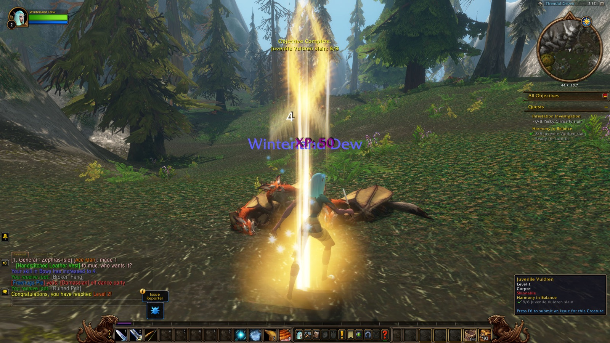

This is the record of Winterland Dew, a Windshaper Skyborne hunter, from her first level to her sixth, kept over two nights on Zephras Isle — the second of them still unfinished.
1Zephras IsleLevel 1–6
Her road began in Thendal Village, where Coming of Age closed quietly, and Harmony in Balance, The Way of the Hunter, and The Anchors of Zephras followed soon after. If you take the same road, that is where it starts too. Elemental Unrest carried her into Thendal Grove, where Juvenile Vuldren and Roiling Winds killed her twice before her second level found her there all the same. A third level came among the Thendal Standing Stones, a fourth back in the village, closing out Aetheen of the Gales and Falling With Style. Her path also carried her through Rise of Spirits, Shen'dar Highlands, and Thendal Cave, on to Windsong Standing Stones, where she met Cirrusfly Soldiers and their Queen, Al'Aketh converts and brutes, Malduko Cloudcrush, and a scrawny Ursera or two, with Axilla, Denna, and Gryp beside her for some of that way. A fifth level found her again in the Grove; a sixth, and a quiet picture taken to mark it, waited for her in Shen'dar Village.

- Picked up
- Coming of Age, Harmony in Balance, Infestation Investigation, Elemental Unrest, The Way of the Hunter, Harvesting Windstones, The Gift of Skysight, Falling With Style, The Anchors of Zephras, Agitators, Return to Rorian, The Cirrusfly Queen, Aetheen of the Gales, Foul Matriarch, Aggressive Encroachment, Al'Aketh Thugs, The Next Step, The Adventurer, The Great Outdoors, Camping 101: Cooking, Welcome to Shen'dar Village, The Windshapers, Meddlesome Mages, The Criminal Element, Pilfered Windstones, Hippogryph Harrassment, WANTED: Vulgara the Insatiable, The Problem With Prideclaws, A Little Beauty, Restocking the Larders, Camping 101: Leatherworking, Camping 101: Skinning
- Turned in
- Coming of Age (Thendal Village, level 1), Harmony in Balance (Thendal Village, level 2), The Way of the Hunter (Thendal Village, level 2), The Anchors of Zephras (Thendal Village, level 2), Elemental Unrest (Thendal Grove, level 2), Agitators (Thendal Grove, level 3), Return to Rorian (Thendal Village, level 3), Infestation Investigation (Thendal Village, level 3), The Cirrusfly Queen (Thendal Village, level 3), The Gift of Skysight (Thendal Village, level 3), Aetheen of the Gales (Thendal Village, level 4), Falling With Style (Thendal Village, level 4), Aggressive Encroachment (Thendal Village, level 4), Al'Aketh Thugs (Thendal Grove, level 5), Foul Matriarch (Thendal Village, level 5), The Adventurer (Shen'dar Village, level 5), The Great Outdoors (Shen'dar Village, level 5), The Next Step (Shen'dar Village, level 5), The Windshapers (Shen'dar Village, level 6), Welcome to Shen'dar Village (Shen'dar Village, level 6), The Problem With Prideclaws (Shen'dar Village, level 6), Meddlesome Mages (Shen'dar Village, level 6)
- Reached
- level 2 (Thendal Grove), level 3 (Thendal Standing Stones), level 4 (Thendal Village), level 5 (Thendal Grove), level 6 (Shen'dar Village)
- First met in combat
- Juvenile Vuldren, Pesky Cirrusfly, Roiling Winds, Al'Aketh Convert, Cirrusfly Soldier, Cirrusfly Queen, Scrawny Ursera, Al'Aketh Neophyte, Al'Aketh Brute, Malduko Cloudcrush, Al'Aketh Ambusher, Ursera Scavenger
- Deaths
- 2 (Thendal Grove)
- Company
- Axilla, Denna, Gryp